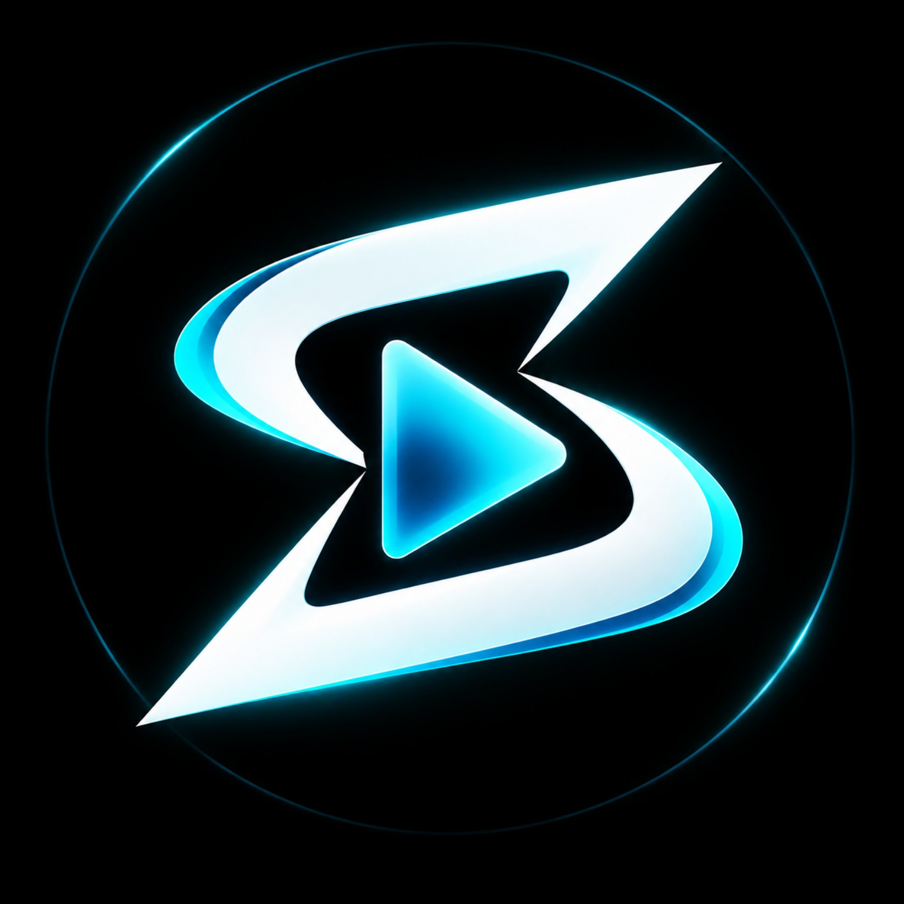
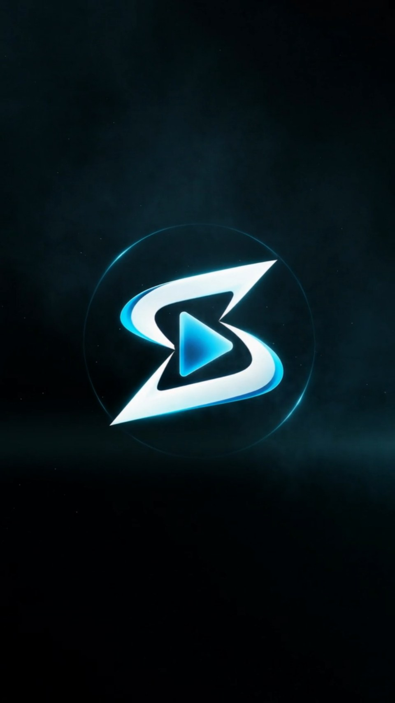

Direção criativa
Conceito, enquadramento, ritmo e linguagem visual pensados para o objetivo da marca.

SYRAXVISUAL Criar meu projetoPRODUÇÃO AUDIOVISUAL + INTELIGÊNCIA ARTIFICIAL
Transformamos ideias, produtos e marcas em experiências visuais cinematográficas — sem depender de uma produção tradicional.
01 / EM CENA
Do conceito ao resultado final.
Uma amostra do nosso universo visual. Vamos criar o próximo?
02 / O QUE CRIAMOS
A ideia é o ponto de partida.
A direção faz a diferença.
POR QUE SYRAX
Ferramentas mudam rápido.
O critério criativo continua essencial.
Conceito, enquadramento, ritmo e linguagem visual pensados para o objetivo da marca.
Selecionamos modelos e fluxos diferentes conforme fidelidade, movimento, formato e acabamento necessários.
É possível criar sem depender de uma filmagem tradicional em todas as etapas, reduzindo barreiras de produção.
Peças pensadas para publicidade, redes sociais, campanhas e formatos digitais.
03 / NOSSO PROCESSO
Tecnologia em cada etapa.
Intenção em cada escolha.
Sem equipe de filmagem. Sem locação obrigatória.
Sem precisar gravar cada cena presencialmente.
04 / DA REFERÊNCIA À CENA
Uma fotografia, um storyboard ou um frame. O começo pode ser simples. O resultado abre novas possibilidades.
Da identidade visual ao movimento.
A marca da SYRAX como ponto de partida para uma vinheta em vídeo.
05 / ECOSSISTEMA SYRAX
UMA PLATAFORMA DA SYRAX VISUALGere imagens, vídeos e campanhas com Inteligência Artificial em um só lugar. Escolha o que quer criar, use seus créditos e acesse diferentes modelos sem precisar dominar várias plataformas.
Acessar SYRAX Ads
DÚVIDAS FREQUENTES
O essencial para começar um projeto com a SYRAX Visual.
Objetivo do projeto, formato desejado e as referências disponíveis — como produto, marca, fotografia, roteiro ou exemplos visuais. Se algo estiver faltando, alinhamos no briefing.
Não. A ideia pode começar simples. A SYRAX pode estruturar conceito, direção visual e cenas a partir do briefing.
O prazo depende da duração, quantidade de cenas, nível de refinamento e formatos de entrega. O cronograma é definido depois de entendermos o escopo.
O processo e o escopo de revisões são combinados antes do início da produção, de acordo com o projeto.
Na SYRAX Visual, a produção é conduzida para você. No SYRAX Ads, você acessa a plataforma e cria diretamente usando créditos.
A PRÓXIMA CENA COMEÇA COM VOCÊ
Conte o que você precisa e vamos transformar
a ideia em uma produção visual.
06 / VAMOS CONVERSAR
Uma campanha inteira ou a primeira cena.
Todo projeto começa com uma conversa.
Criado com IA.
Dirigido pela SYRAX.